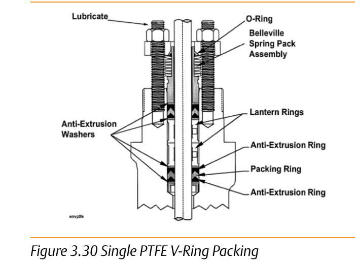

Packing Arrangement: Baseline vs. Full Cross-Section
Single PTFE V-Ring (baseline)

A coil spring loads one V-ring set against the packing box — meets the 100 ppmv sliding-stem criterion with the lowest operating friction of the packing families
Full Packing-Material Arrangement

Rings, followers, and springs in cross-section — what actually loads and maintains the seal as the stem strokes and wears, in Single, Double, and Leak-Off configurations
After Control Valve Handbook, 6th ed., Figs. 3.30, 3.24 (Packing Material Arrangements, §3.4) — used directly, own printed labels retained. Component Index: cvh-cmp-single-ptfe-vring-packing, cvh-cmp-packing-material-arrangements-globe.